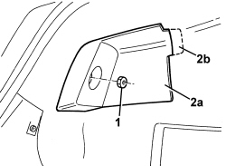
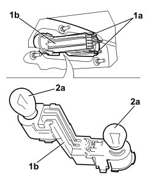
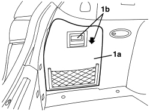
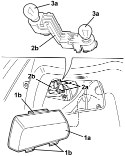

5540A71 EXTERIOR TAIL LIGHT BULB (ONE), LH OR RH - R.R.
- Path
- Procedures > 55 ELECTRICAL EQUIPMENT > 5540 EXTERIOR LIGHTING > 5540A LIGHTING > 5540A71 EXTERIOR TAIL LIGHT BULB (ONE), LH OR RH - R.R.
- Kind
- repair procedure (removal / refitting; the operation number is the code)
- Applies to
- all engines; all production periods
- Interactive page
- https://sloeber94.github.io/elrnDB/alfa/159/en/#/939011026
Applies to: all engines; all production periods
 Removing
Removing
 Refitting
Refitting- Open the boot lid.
1. Undo the nut fixing the inner light cover.
2. Remove the inner light cover (2a) releasing the retainer (2b).

Applies to: all engines; all production periods
1. Release the retainers (1a) and extract the bulb holder (1b).
2. Remove the bulb (2a) involved, extracting it from the bulb holder (bayonet fitting).

Applies to: all engines; all production periods
Refitting
Removing- Check that the bulb is working.
- Refit the bulb in the bulb holder.
- Place the bulb holder back in position and attach the retainers.
- Position the inner light cover and attach the retainer.
- Tighten the nut.
- Close the boot lid.
- Check that the outer rear light cluster lights are working.
Applies to: all engines; all production periods; only with equipment: Station Wagon
Removing
Refitting- Open the tailgate.
1. Remove the luggage compartment side door (1a) using the grip (1b).

Applies to: all engines; all production periods; only with equipment: Station Wagon
1. Remove the protective inner light cover (1a) releasing the retainers (1b).
2. Release the retainers (2a) and extract the bulb holder (2b).
3. Remove the bulb (3a) involved, extracting it from the bulb holder (bayonet fitting).

Applies to: all engines; all production periods; only with equipment: Station Wagon
Refitting
Removing- Check that the bulb is working.
- Refit the bulb in the bulb holder.
- Place the bulb holder back in position and attach the retainers.
- Place the protective inner light cover in position and attach the retainers.
- Fit the luggage compartment side cover in place.
- Close the tailgate.
- Check that the outer rear light cluster lights are working.